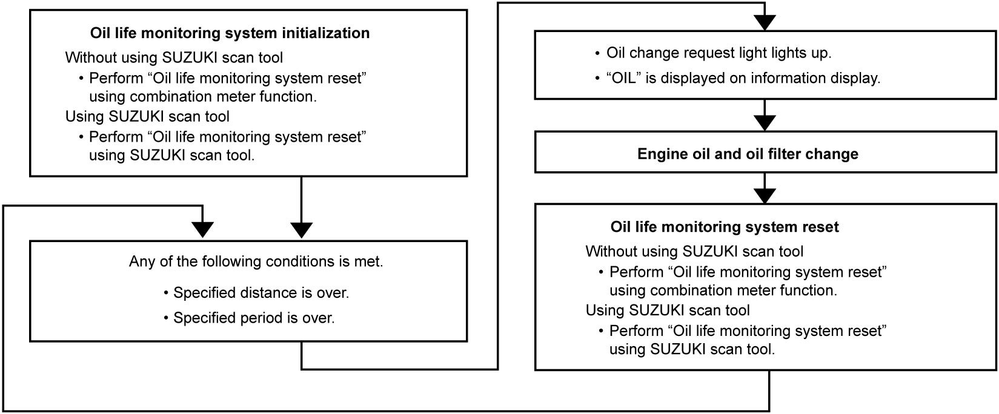
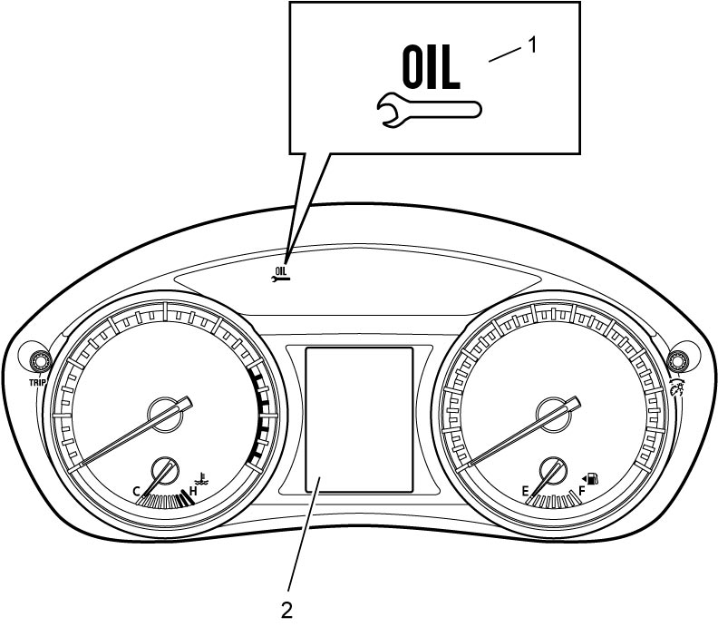
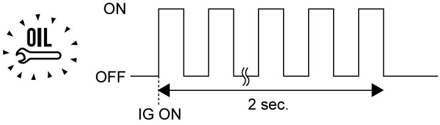
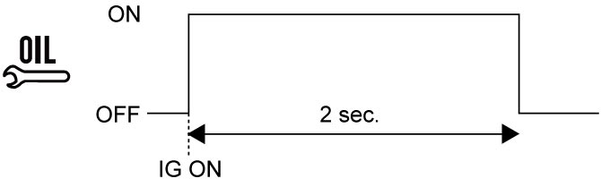
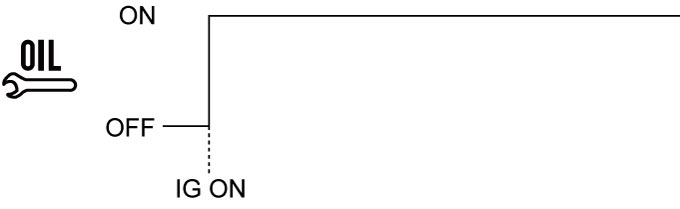
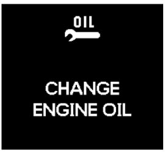

9C
| Oil Life Monitoring System Description |
System Description
The oil life monitoring system in petrol engine model (if equipped) alerts the driver that the engine oil needs replacement monitoring the distance covered and a period of time elapsed calculated by the combination meter. Engine oil change intervals are determined by two factors, the distance and the period since the last engine oil change.
The oil life monitoring system must be initialized before the first delivery of the vehicle to the customer, since no setting has been made on the combination meter at the time of shipment of the vehicle from the factory, and when the combination meter is replaced with a new one. Resetting the oil life monitoring system initializes the system. For details of the reset operation, refer to Oil Life Monitoring System Reset. Once initialization is completed, the oil change condition is set to “Normal” and the oil change request light is set to “Active”. The combination meter starts counting the distance and period. The oil life monitoring system also needs to be reset at every engine oil change.
The engine oil change intervals can be selected from three types of oil change conditions, “Normal”, “Severe” and “Optional”, and the state of oil change request light can be set to “Active” or “Disabled” using SUZUKI scan tool. Refer to Operator’s Manual of SUZUKI scan tool for further details.
Details of engine oil change intervals for “Normal” and “Severe” conditions are described in Maintenance Schedule under Normal Driving Conditions (Market Code P02, P22 and P54), Maintenance Schedule under Normal Driving Conditions (Market Code P71), Maintenance Schedule under Normal Driving Conditions (Except P02, P22, P54 and P71) and Maintenance Schedule under Normal Driving Conditions (Market Code P02, P22 and P54). When “Optional” is selected, the engine oil change distance and engine oil change period can be configured to the preference of the user.
When the oil change request light is set to “Disable”, the oil change request light goes off and the distance / period counter stops counting.
For details of the settings, refer to Scan Tool Utility Table.
NOTE:
•After engine oil change is completed, cumulative distance and period need to be reset regardless of the lighting state of the oil change request light.
•The cumulative distance and period cannot be reset even if the battery has been disconnected.
•The period while the battery is disconnected is not added to the count.
•The cumulative distance and period cannot be reset even if the battery has been disconnected.
•The period while the battery is disconnected is not added to the count.
| Oil life monitoring system | Operation |
|---|---|
| Initialization | Distance / Period count starts. |
| Reset | Distance / Period count is reset, but configurations before resetting are stored. |
| Function Setting | Oil Change Interval: Normal / Severe / Optional can be set to the preference of the user. For detail, refer to Oil Life Monitoring System Function Setting. |
Flow chart from initialization to reset

 "Expand image")
Oil Change Request Light Operation
When the engine oil change is due, the oil change request light (1) lights up and “OIL” is displayed on the information display (2) in the combination meter.
The oil change request light operates as follows depending on the setting and condition.

 "Expand image")
| Oil life monitoring system initialization | Function of oil change request light | Oil change interval | Oil change request light | Information display |
|---|---|---|---|---|
| Incomplete | — | — |

 "Expand image") |
— |
| Complete | Disabled | — | — | — |
| Active | Not reached |

 "Expand image") |
— | |
| Reached |

 "Expand image") |

 "Expand image") |